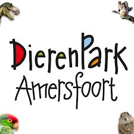
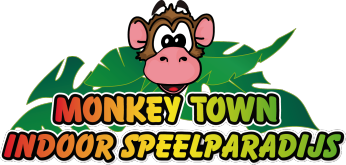

Dierenpark Amersfoort is een dierentuin in Amersfoort. Jaarlijks wordt het park bezocht door gemmideld 650.000 bezoekers. Het park is 14 hectare groot.

Met de vele attracties voor kinderen van 1 t/m 10 jaar, goed verzorgde horecagelegenheid en scherpe entreetarieven is Monkey Town het leukste Indoor Speelparadijs van Amersfoort en omgeving en daarmee het perfecte gezinsuitje.  We zijn 7 dagen per week geopend, er is ruime parkeergelegenheid en entreetickets voor de kids koop je eenvoudig bij binnenkomst aan onze kassa, begeleiders (ouders / grootouders) hebben altijd gratis toegang.